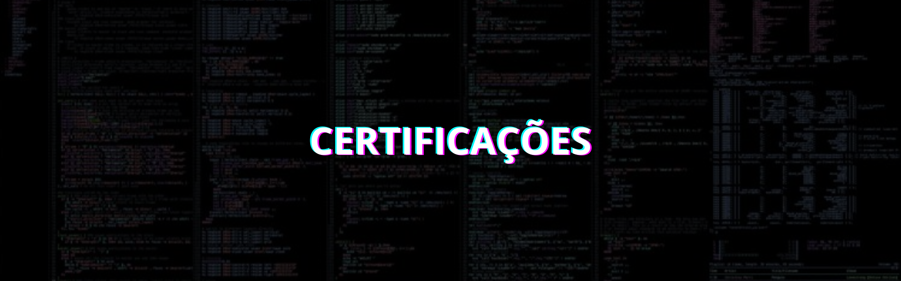
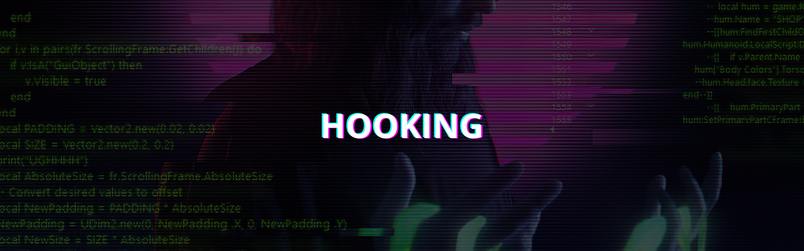

A filosofia hacker transcende a simples habilidade técnica ou a ideia estereotipada de um indivíduo isolado em frente a um computador tentando quebrar sistemas. É um ethos, uma mentalidade que valoriza a criatividade, o aprendizado constante e
o uso do conhecimento para explorar e melhorar o mundo ao nosso redor. Ser hacker é uma forma de encarar desafios, questionar estruturas estabelecidas e encontrar soluções inovadoras, muitas vezes em espaços onde outros só veem limitações.
No centro da filosofia hacker está a curiosidade insaciável. Hackers não se satisfazem com o uso superficial de tecnologias; eles querem entender como algo funciona, desmontá-lo e, muitas vezes, reconstruí-lo de uma maneira melhor. Essa busca
pelo conhecimento vai além do campo técnico e se expande para áreas como arte, ciência, ética e cultura.
Hacking Roadmap
Filosofia
Ferramentas são apenas meios, não fins
Uma ferramenta é, por definição, um instrumento projetado para realizar uma tarefa específica. Scanners de rede, exploits automáticos e frameworks de pentest são úteis e podem poupar tempo. Contudo, seu uso eficaz exige compreensão do que está
acontecendo por trás das interfaces e dos comandos. Rodar ferramentas sem entender seu funcionamento é como pilotar um avião sem saber nada sobre aviação: pode parecer impressionante por um momento, mas não leva longe. Por isso, compreender
as bases da computação se torna essencial na formação de um hacker.
Construindo Fundamentos
Especialização em Web Hacking
Especialização em Infrastructure Hacking
Especialização em Mobile
Construindo Fundamentos
A organização de computadores é a base para compreender como sistemas operam, processam informações e interagem com o hardware. Para o hacking, esse conhecimento é essencial para explorar vulnerabilidades e entender o funcionamento interno dos sistemas.
Recursos
- Organizacao estruturada de computadores - Univesp
- Organizacao estruturada de computadores - Andrew Stuart Tanenbaum
- Arquitetura e Organização de Computadores - William Stallings
1. Fundamentos de Organização de Computadores
Entender como os computadores processam informações e os conceitos básicos de hardware e arquitetura.
- Estrutura básica de um computador (CPU, memória, armazenamento, E/S)
- Arquitetura de Von Neumann e Harvard
- Representação de dados em binário e hexadecimal
- Tipos de sistemas numéricos (complemento de 2, ponto flutuante)
- Operações lógicas e aritméticas
- Converter números entre binário, hexadecimal e decimal
- Criar circuitos básicos como somadores e multiplicadores usando simuladores.
2. Processadores e Arquitetura de CPU
Compreender como o processador executa instruções e o impacto disso na exploração de vulnerabilidades.
- Ciclo de busca, decodificação e execução
- Registro, cache e hierarquia de memória
- Arquiteturas RISC vs. CISC
- Modos de operação do processador (usuário, kernel)
- Analisar o impacto da cache em performance (testes com ferramentas como perf no Linux)
3. Memória e Armazenamento
Entender como a memória funciona, o gerenciamento pelo sistema operacional e as possibilidades de exploração.
- Tipos de memória: RAM, ROM, cache, armazenamento secundário
- Virtualização de memória e mapeamento de páginas
- Pilha e heap (alocação estática e dinâmica)
- Buffer overflows e como explorar vulnerabilidades de memória
- Estudar casos de buffer overflow (por exemplo, CVE-2017-5638)
O estudo aprofundado de sistemas operacionais (SO) é crucial para entender como os sistemas interagem com o hardware e com os programas, permitindo explorar vulnerabilidades, criar exploits e proteger ambientes.
Recursos
- Sistemas Operacionais - Univesp
- Sistemas Operacionais - Fábio Akita
- Canal Diolinux
- Sistemas Operacionais Modernos - Andrew Stuart Tanenbaum
- Sistemas Operacionais: Projeto e Implementação - Andrew Stuart Tanenbaum
1. Introdução aos Sistemas Operacionais
Entender o que é um sistema operacional, sua função e componentes principais
- O que é um SO e por que ele é necessário
- Funções principais: gerenciamento de processos, memória, dispositivos e arquivos
- Usar sistemas operacionais diferentes (Linux, Windows, macOS)
- Configurar máquinas virtuais com VirtualBox ou VMware
2. Estrutura e Arquitetura de um SO
Compreender como os sistemas operacionais são estruturados internamente
- Tipos de arquitetura: monolítica, microkernel, exokernel
- Módulos do kernel e drivers
- Chamadas de sistema (syscalls)
- Explorar as chamadas de sistema no Linux usando comandos como strace
3. Gerenciamento de Processos
Entender como o Sistema Operacional lida com processos e threads
- Diferença entre processos e threads
- Estados de processos: criação, execução, espera, finalização
- Comunicação entre processos (IPC): pipes, filas, memória compartilhada
- Escalonamento de processos
- Monitorar processos no Linux com comandos como top e ps
4. Gerenciamento de Processos
Explorar como o SO gerencia a memória e entender conceitos como alocação e virtualização
- Memória física vs. memória virtual
- Paginação, segmentação e mapeamento de páginas
- Gerenciamento de heap e stack
- Swapping e hierarquia de memória
- Usar ferramentas como vmstat e free para monitorar o uso de memória
5. Sistemas de Arquivos
Compreender como os SOs gerenciam e organizam os dados no disco
- Estruturas de sistemas de arquivos: FAT, NTFS, ext4
- Gerenciamento de diretórios e permissões
- Journaled vs. non-journaled file systems
- Montar e desmontar sistemas de arquivos no Linux
- Explorar permissões de arquivos usando chmod e chown
6. Gerenciamento de Entrada/Saída
Entender como o SO interage com dispositivos de hardware
- Gerenciamento de dispositivos de E/S
- DMA (Direct Memory Access) e seus riscos
- Drivers: como funcionam e como criar exploits para drivers vulneráveis
- Analisar dispositivos conectados com lsblk, dmesg, e lspci
- Testar drivers vulneráveis em um ambiente virtualizado
7. Segurança em Sistemas Operacionais
Conhecer as técnicas de segurança implementadas em SOs e como superá-las
- Técnicas de mitigação: ASLR, DEP, SELinux
- Modelos de segurança no Windows e Linux
- Configuração de permissões e políticas de segurança
- Configurar e analisar políticas do SELinux ou AppArmor
- Estudar e reproduzir exploits para bypass de ASLR
O estudo de redes de computadores é essencial para entender como dispositivos se comunicam e compartilham dados.
Recursos
- Redes de Computadores - Univesp
- Aulas Práticas de Packet Tracer - Hardware Redes Brasil
- Introdução a Redes - Fabio Akita
- Cisco Networking Academy
- Redes de Computadores e a Internet: Uma Abordagem Top-Down - Jim Kurose, Keith Ross
- Redes de Computadores - Andrew Stuart Tanenbaum
1. Fundamentos de Redes
Compreender os conceitos básicos e a terminologia essencial
- O que é uma rede de computadores
- Tipos de redes: LAN, WAN, MAN, PAN
- Modelos de comunicação: cliente-servidor e peer-to-peer
- Operadores aritméticos, relacionais e lógicos
- Topologias de rede: estrela, barramento, anel, mesh
- Criar uma rede local simples com dois dispositivos
- Experimentar comandos básicos como ping e tracert/traceroute
2. Modelos de Referência (OSI e TCP/IP)
Entender como os dados são transmitidos entre dispositivos
- Modelo OSI (camadas: física, enlace, rede, transporte, sessão, apresentação, aplicação).
- Modelo TCP/IP (camadas simplificadas)
- Comparação entre OSI e TCP/IP
- Identificar camadas ao analisar o tráfego de rede
- Mapear protocolos para suas respectivas camadas (ex.: HTTP na camada de aplicação, TCP na camada de transporte).
3. Endereçamento e Protocolo
Aprender como dispositivos identificam e se comunicam uns com os outros
- Endereçamento IP (IPv4 e IPv6)
- Sub-redes e máscaras de rede
- Protocolos comuns: TCP, UDP, ICMP, ARP, DNS
- Configurar endereços IP estáticos e dinâmicos em dispositivos
- Usar ferramentas como nslookup, dig, e ipconfig/ifconfig
4. Camada Física e Enlace
Entender como os dados são transmitidos fisicamente e os protocolos de acesso.
- Meio de transmissão: cabos, fibras ópticas, redes sem fio.
- Ethernet e Wi-Fi.
- Comutação e endereçamento MAC.
- Testar conexões físicas com cabos Ethernet.
- Configurar redes Wi-Fi em um roteador.
5. Roteamento e Switching
Aprender como os dados são encaminhados dentro e entre redes.
- Roteadores e switches: funções e diferenças
- Protocolos de roteamento: RIP, OSPF, BGP
- NAT e PAT (Port Address Translation)
- Configurar uma rota estática em um roteador
- Simular roteamento dinâmico com OSPF usando Packet Tracer
6. Segurança de Redes
Compreender as principais ameaças e como proteger redes.
- Firewalls, IDS e IPS
- VPNs e criptografia de tráfego
- Ataques comuns: DDoS, spoofing, MITM (Man-in-the-Middle)
- Configurar um firewall básico (iptables no Linux)
7. Monitoramento e Análise de Redes
Aprender a capturar e analisar tráfego para troubleshooting e segurança
- Ferramentas de monitoramento (ex.: Wireshark, tcpdump, Nmap)
- Análise de pacotes e logs de rede
- Detecção de anomalias
- Capturar e analisar tráfego DNS e HTTP com Wireshark
- Usar Nmap para escanear portas abertas em uma rede local
C é uma das linguagens de programação mais importantes e influentes da computação, oferecendo uma base sólida para entender sistemas operacionais, desenvolvimento de software e conceitos de baixo nível, como gerenciamento de memória.
Recursos
- Linguagem C - Canal "De aluno para aluno"
- Programação Moderna em C - Mente Binária
- C Completo e total - Herbert Schildt
- Como programar Em C - Harvey Deitel, Paul Deitel
1. Fundamentos da Linguagem C
Familiarizar-se com a sintaxe e estrutura básica da linguagem
- História e características da linguagem C
- Sintaxe básica: estrutura de um programa C
- Tipos de dados (int, char, float, double)
- Operadores aritméticos, relacionais e lógicos
- Entrada e saída padrão: printf e scanf
- Escrever programas simples como "Hello World" e calculadoras básicas
- Praticar leitura e escrita de dados do teclado
2. Controle de Fluxo C
Aprender como controlar o fluxo do programa com estruturas de decisão e repetição
- Estruturas condicionais: if, else if, else, switch
- Estruturas de repetição: for, while, do-while
- Break e continue
- Criar programas que utilizem loops, como tabelas de multiplicação
- Implementar um menu interativo com a estrutura switch
3. Funções
Compreender o conceito de modularidade e reutilização de código
- Declaração e definição de funções
- Parâmetros e valores de retorno
- Escopo e ciclo de vida de variáveis (local e global).
- Escrever funções para cálculos matemáticos simples
- Implementar programas modulares dividindo funcionalidades em várias funções
4. Arrays e Strings
Manipular coleções de dados e trabalhar com texto
- Arrays unidimensionais e multidimensionais
- Manipulação de strings usando arrays de caracteres
- Funções padrão para strings: strlen, strcpy, strcmp, etc
- Criar programas para encontrar o maior e menor número em um array
- Implementar um programa que inverta uma string
5. Ponteiros
Dominar um dos conceitos mais poderosos e complexos do C.
- Declaração e inicialização de ponteiros
- Operadores & (endereço) e * (desreferenciamento)
- Ponteiros e arrays
- Ponteiros para funções
- Criar programas que usem ponteiros para manipular arrays
- Implementar uma função que troca os valores de duas variáveis usando ponteiros
6. Estruturas e Uniões
Trabalhar com tipos de dados personalizados.
- Declaração e uso de estruturas (struct)
- Aninhamento de estruturas
- Uniões (union): compartilhamento de memória
- Criar uma estrutura para armazenar dados de um estudante (nome, idade, notas)
- Implementar um programa que utiliza uniões para representar dados de diferentes tipos
7. Gerenciamento de Memória
Aprender a alocar e liberar memória dinamicamente.
- Funções de alocação de memória: malloc, calloc, realloc, free
- Gerenciamento de memória e vazamentos
- Pilha vs. heap
- Implementar um programa que aloca memória dinamicamente para um array
- Testar vazamentos de memória usando ferramentas como valgrind
8. Manipulação de Arquivos
Aprender a trabalhar com entrada/saída em arquivos.
- Abertura, leitura, escrita e fechamento de arquivos
- Modos de abertura (r, w, a, etc.)
- Funções padrão: fopen, fclose, fprintf, fscanf, fgets, fputs
- Criar um programa que lê e escreve dados em arquivos de texto
- Implementar um sistema simples de cadastro de usuários armazenado em arquivos
Estruturas de dados são pilares fundamentais para resolver problemas computacionais de forma eficiente.
Recursos
- LeetCode - Plataforma online para codificação
- Estruturas de dados em C - Canal "Programe seu futuro"
- Entendendo Algoritmos: Um Guia Ilustrado Para Programadores e Outros Curiosos - Aditya Y. Bhargava
- Estruturas de Dados Usando C - Andrew Stuart Tanenbaum
1. Fundamentos de Estruturas de Dados
Compreender o que são estruturas de dados e sua importância
- Definição e tipos: estruturadas (arrays, listas) vs. não estruturadas (grafos)
- Complexidade de tempo e espaço (Big-O Notation)
- Operações básicas: inserção, remoção, busca
- Implementar funções para medir a complexidade de algoritmos básicos
- Comparar tempos de execução de diferentes abordagens para o mesmo problema
2. Arrays e Strings
Trabalhar com coleções lineares estáticas
- Arrays: unidimensionais e multidimensionais
- Strings como arrays de caracteres
- Operações: inserção, remoção, busca, ordenação
- Criar funções para manipulação de strings (ex.: inverter, verificar palíndromos)
3. Listas Ligadas
Introduzir estruturas dinâmicas que utilizam ponteiros ou referências
- Lista ligada simples
- Lista duplamente ligada
- Lista circular
- Implementar uma lista ligada simples com inserção e exclusão
- Criar uma função para reverter uma lista ligada
4. Pilhas e Filas
Aprender estruturas lineares com restrições específicas
- Pilhas (Stacks): LIFO (Last In, First Out)
- Filas (Queues): FIFO (First In, First Out)
- Fila circular e deques (Double-Ended Queues)
- Implementar uma pilha usando arrays e listas ligadas
- Resolver problemas como verificação de parênteses balanceados (usando pilha)
5. Árvores
Trabalhar com estruturas hierárquicas
- Árvores binárias e binárias de busca (BST)
- Percursos: pré-ordem, in-ordem, pós-ordem
- Árvores balanceadas (AVL, Red-Black Tree)
- Heap (Min-Heap, Max-Heap)
- Implementar uma árvore binária com inserção e busca
- Resolver problemas de ordenação usando heapsort
6. Grafos
Compreender estruturas que representam conexões e redes
- Representações: lista de adjacência e matriz de adjacência
- Tipos de grafos: direcionados, não direcionados, ponderados
- Algoritmos básicos: DFS (Busca em Profundidade) e BFS (Busca em Largura)
- Implementar DFS e BFS para exploração de grafos
- Resolver problemas de conectividade e menor caminho (ex.: Dijkstra)
7. Tabelas Hash
Aprender técnicas eficientes de armazenamento e busca
- Funções hash e resolução de colisões
- Encadeamento e endereçamento aberto
- Aplicações: dicionários, contagem de frequência
- Implementar uma tabela hash com encadeamento
- Resolver problemas de contagem de palavras usando tabelas hash
Os paradigmas de programação são estilos ou abordagens para resolver problemas computacionais e construir software. Estudar diferentes paradigmas ajuda a expandir sua capacidade de pensar sobre problemas de maneira inovadora e a escolher a abordagem certa para cada situação.
Recursos
- Paradigmas de Programação - João P. Leite
- Paradigmas de programação: Uma introdução - Vários autores
- Python? Java? Rust? Qual a Diferença? | Discutindo Linguagens - Fábio Akita
1. Fundamentos dos Paradigmas de Programação
Compreender o conceito de paradigmas e por que são importantes
- O que é um paradigma de programação
- Diferenças entre paradigmas: imperativo, declarativo, funcional, orientado a objetos, lógico
- Linguagens multiparadigma (ex.: Python, JavaScript).
- Identificar paradigmas suportados por linguagens que você conhece
- Explorar exemplos simples de código em diferentes paradigmas
2. Paradigma Imperativo
Estudar a abordagem mais fundamental de programação
- Programação baseada em comandos sequenciais
- Controle explícito do estado do programa
- Estruturas comuns: loops, condicionais, variáveis
- Implementar algoritmos básicos (ex.: soma de números, ordenação)
- Trabalhar com variáveis globais e locais
3. Paradigma Orientado a Objetos (OOP)
Aprender a modelar sistemas com base em objetos que interagem entre si
- Classes, objetos, métodos, encapsulamento
- Herança, polimorfismo, abstração
- Design patterns (ex.: Singleton, Factory)
- Criar um sistema simples usando classes e herança (ex.: sistema de cadastro)
- Implementar design patterns básicos
4. Paradigma Funcional
Entender a programação com funções puras e sem estado compartilhado
- Funções puras, imutabilidade, transparência referencial
- Recursão, funções de ordem superior
- Monads e composição de funções
- Implementar funções recursivas para calcular fatorial ou Fibonacci
- Resolver problemas usando map, filter e reduce
5. Paradigma Declarativo
Aprender a descrever o que deve ser feito, sem especificar como
- Foco no "o quê" em vez do "como"
- Escrever consultas SQL complexas para manipular dados
6. Paradigma Lógico
Explorar a programação baseada em lógica e inferência
- Definição de fatos, regras e consultas
- Resolução lógica e sistemas baseados em regras
- Criar um sistema básico de inferência em Prolog (ex.: genealogia)
7. Paradigma Estruturado
Compreender a base da programação organizada em blocos e funções
- Programação baseada em sequências, decisões e repetições
- Modularidade com funções
- Implementar estruturas de controle (if-else, for, while) de forma otimizada
8. Paradigma Orientado a Eventos
Aprender a trabalhar com sistemas que respondem a eventos
- Tratamento de eventos assíncronos
- Loops de eventos, callbacks
- Criar uma aplicação interativa no navegador usando JavaScript
9. Paradigma Paralelo e Concorrente
Aprender a criar programas que utilizam múltiplos threads ou processos
- Multithreading, concorrência e paralelismo
- Gerenciamento de recursos compartilhados (locks, semáforos)
- Criar um programa que soma números em paralelo
10. Linguagens Multiparadigma
Explorar linguagens que suportam múltiplos paradigmas
- Combinação de estilos de programação em uma única linguagem, ex: Python, JavaScript, Scala
- Criar um programa que utiliza orientação a objetos e programação funcional
Conhecimento profundo dos pilares da segurança da informação é indispensável para qualquer hacker ético ou profissional que deseje desempenhar um papel efetivo na defesa e exploração de sistemas. Esses pilares fornecem as bases teóricas e práticas necessárias para compreender, avaliar e proteger infraestruturas complexas em constante evolução. Um hacker que domina os conceitos de ciclo de vida dos dados, confidencialidade, integridade e disponibilidade (CIA Triad) e frameworks como o NIST Cybersecurity Framework consegue entender a fundo como os sistemas interagem. Isso permite identificar vulnerabilidades não óbvias e prever o impacto de possíveis ataques em diferentes camadas da infraestrutura
Recursos
- Curso de Segurança da Informação - Módulo 00 - Curso em Víde
- Curso de Segurança da Informação - Hardware Redes Brasil
- Papo de Hacker - Guia Anônima
- TecSec Podcast
- Café Seguro Podcast
- Canal True Hacking
1. Ciclo de Vida dos Dados
Compreender como os dados fluem dentro da organização e sua proteção em cada etapa.
- Descoberta: Identificar dados críticos
- Classificação: Definir níveis de sensibilidade
- Processamento: Garantir segurança durante o uso
- Armazenamento: Proteção física e lógica de dados
- Descarte: Técnicas seguras de destruição
- Classificar um conjunto de dados fictícios de uma organização em níveis de sensibilidade
2. Principais Conceitos de Segurança da Informação
Entender os fundamentos da segurança da informação.
- Confidencialidade, Integridade e Disponibilidade (CIA Triad)
- Riscos, ameaças e vulnerabilidades
- Políticas e governança de segurança
- Identificar riscos e vulnerabilidades em um cenário fictício
3. Pessoas, Processos e Tecnologias
Equilibrar os três pilares para uma abordagem integrada de segurança.
- Treinamento e conscientização para usuários
- Desenvolvimento de processos de segurança robustos
- Implementação de tecnologias como firewalls, antivírus e sistemas de monitoramento
- Elaborar um plano de treinamento básico de segurança para funcionários de uma empresa fictícia
4. Confidencialidade, Integridade e Disponibilidade (CIA Triad)
Garantir a tríade essencial da segurança da informação.
- Confidencialidade: Criptografia, controle de acesso
- Integridade: Hashing, logs de auditoria
- Disponibilidade: Balanceamento de carga, redundância
- Simular a implementação de criptografia para proteger dados em trânsito
5. Códigos Maliciosos (Malwares)
Identificar e mitigar ameaças causadas por malwares.
- Tipos de malware: Vírus, worms, ransomware, trojans
- Ferramentas de detecção: Antivírus, EDR
- Práticas preventivas: Atualizações, backups, controle de e-mails
- Analisar um cenário fictício de ataque ransomware e propor contramedidas
6. Gerenciamento de Risco
Minimizar os impactos de ameaças com avaliação e mitigação de riscos.
- Identificação de riscos: Mapeamento de ativos e ameaças
- Análise de impacto: Avaliar consequências financeiras e operacionais
- Planejamento: Aplicação de controles, planos de contingência
- Criar um plano de gerenciamento de riscos para uma organização fictícia
7. Modelos e Frameworks de Segurança da Informação
Aplicar estruturas de referência para governança e controles.
- COBIT: Governança corporativa de TI
- ISO/IEC 27001: Implementação de sistemas de gestão de segurança
- PCI-DSS: Requisitos para segurança de dados em transações financeiras
- Comparar os requisitos da ISO/IEC 27001 e COBIT em um estudo de caso
8. Cyber Kill Chain
Identificar e interromper o ciclo de ataque cibernético.
- Etapas: Reconhecimento, intrusão, exploração, exfiltração
- Ferramentas de defesa: SIEM, IDS/IPS
- Estratégias de mitigação: Bloqueio proativo e monitoramento contínuo
- Mapear as etapas de um ataque fictício usando a Cyber Kill Chain
9. MITRE ATT&CK
Entender táticas, técnicas e procedimentos de ataques (TTPs).
- Estrutura de táticas: Reconhecimento, execução, persistência
- Mapeamento de vulnerabilidades: Simulação de ataques
- Ferramentas: Caldera, ATT&CK Navigator
- Simular uma análise de vulnerabilidades usando o ATT&CK Navigator
10. Controles Críticos de Segurança (CIS Controls)
Implementar controles priorizados para reduzir riscos de ciberataques.
- Inventário e controle de ativos de hardware e software
- Gerenciamento de configurações: Padrões seguros
- Monitoramento contínuo: Detecção de anomalias
- Implementar os primeiros cinco controles críticos do CIS em um cenário fictício
11. NIST Cybersecurity Framework (CSF)
Adotar uma abordagem estruturada para gerenciamento de segurança.
- Funções principais: Identificar, Proteger, Detectar, Responder, Recuperar
- Integração com processos organizacionais
- Personalização do framework para diferentes setores
- Criar um plano de segurança baseado no NIST CSF para uma empresa fictícia
12. Higiene Cibernética (Conscientização)
Criar uma cultura de segurança na organização.
- Práticas recomendadas: Atualizações regulares, senhas fortes, backups
- Treinamentos regulares de conscientização
- Simulações práticas: Phishing, uso de dispositivos não autorizados
- Desenvolver um plano de treinamento de higiene cibernética para funcionários
13. Privacidade: Principais Normas e Conceitos
Garantir conformidade com regulamentações e proteger dados pessoais.
- Regulamentações: GDPR, LGPD
- Conceitos-chave: Consentimento, direitos dos titulares
- Anonimização e pseudonimização
- Mapear os requisitos de privacidade da LGPD para um cenário fictício de processamento de dados
14. Fundamentos de Criptografia
Proteger dados por meio de algoritmos criptográficos.
- Tipos de criptografia: Simétrica, assimétrica
- Algoritmos: AES, RSA, SHA
- Certificados digitais e PKI (Infraestrutura de Chave Pública)
- Implementar um algoritmo de criptografia simétrica em uma aplicação fictícia
15. Autenticação e Autorização
Controlar o acesso a sistemas e informações de maneira segura.
- Métodos de autenticação: Senhas, biometria, MFA (autenticação multifator)
- Modelos de autorização: RBAC (controle baseado em funções), ABAC
- Gerenciamento de sessões e tokens
- Desenvolver um sistema básico de autenticação e autorização para um site fictício
Especialização em Web Hacking
O desenvolvimento web é uma habilidade essencial para hackers, pois fornece o conhecimento fundamental sobre como os sites e aplicações funcionam, permitindo identificar vulnerabilidades e explorar falhas de segurança. Entender tecnologias como HTML, CSS, JavaScript e PHP possibilita compreender a estrutura, o comportamento e a interação entre frontend e backend.
Recursos
- Curso completo e atual de HTML5 e CSS3 (Módulo 1) - Curso em Vídeo
- Curso completo e atual de HTML5 e CSS3 (Módulo 2) - Curso em Vídeo
- Curso completo e atual de HTML5 e CSS3 (Módulo 3) - Curso em Vídeo
- Curso completo e atual de HTML5 e CSS3 (Módulo 4) - Curso em Vídeo
- Javascript Completo e Profissional - CFBCursos
- Curso de PHP 8 do Zero ao Profissional - UnSet
- Programação para Iniciantes - Fabio Akita
1. Fundamentos do HTML
Aprender a estruturar páginas web com HTML.
- Elementos básicos:
<!DOCTYPE>,<html>,<head>,<body>. - Estrutura semântica:
<header>,<footer>,<section>,<article>. - Formulários:
<form>,<input>,<select>,<textarea>. - Links e navegação:
<a>, âncoras,target.
- Criar uma página com título, parágrafos, imagens e links.
- Criar um formulário simples com campos de texto, rádio e checkbox.
2. Fundamentos do CSS
Estilizar páginas e melhorar a experiência visual.
- Seletores básicos: classe (
.classe), ID (#id), elementos (h1,p). - Propriedades essenciais: cores, margens, bordas e fontes.
- Layouts:
display(block,inline,flex,grid), posicionamento. - Responsividade: media queries, unidades relativas (
em,%,vh,vw).
- Criar um site com layout responsivo usando Flexbox.
- Estilizar um formulário com bordas, cores e espaçamento.
3. Fundamentos do JavaScript
Adicionar interatividade e lógica ao front-end.
- Variáveis, tipos de dados e operadores.
- Manipulação do DOM:
document.getElementById,querySelector. - Eventos: cliques, teclas, mudanças (
onclick,onchange). - Funções e loops básicos.
- Criar um contador que aumenta/diminui ao clicar em botões.
- Validar um formulário verificando campos obrigatórios.
4. JavaScript Avançado
Aprender conceitos mais profundos e práticas modernas.
- Promises e async/await.
- APIs: Fetch, consumo de APIs REST.
- Modularização: ES6 modules (
import,export). - Frameworks e bibliotecas: introdução ao React ou Vue.js.
- Criar um sistema de busca consumindo dados de uma API.
- Criar um componente de galeria de imagens com React.
5. Fundamentos do PHP
Aprender o lado servidor para páginas dinâmicas.
- Sintaxe básica e estrutura do PHP.
- Integração com HTML:
<?php echo ?>. - Variáveis, loops e funções.
- Manipulação de formulários:
$_GET,$_POST.
- Criar um formulário de login simples que exibe os dados inseridos.
- Criar um script que soma dois números recebidos via formulário.
6. Integração e Deploy
Publicar e manter aplicações web.
- Configurar ambiente local (XAMPP, WAMP, ou Docker).
- Deploy em servidores: FTP, cPanel ou serviços como Heroku.
- Conceitos de segurança: HTTPS, sanitização, validação.
- Publicar um site no GitHub Pages.
- Fazer deploy de uma aplicação PHP no servidor local.
Os bancos de dados desempenham um papel crucial na infraestrutura de praticamente todas as aplicações modernas, armazenando desde informações de usuários até dados financeiros e operacionais. Para um hacker, entender bancos de dados e a linguagem SQL é uma habilidade essencial, pois muitas vulnerabilidades críticas estão diretamente relacionadas à interação entre aplicações e seus bancos de dados.
Recursos
- Curso SQL - Dev Aprender | Jhonatan de Souza
- Bancos de Dados - Univesp
- Discutindo sobre Banco de Dados | Dos primórdios a Big Data - Fábio Akita
1. Fundamentos de Banco de Dados
Entender os conceitos básicos e estrutura de um banco de dados relacional.
- Conceitos: tabelas, linhas, colunas e chaves.
- Modelagem de dados: entidades, atributos, relacionamentos.
- Chaves primárias e estrangeiras.
- Modelar um banco de dados simples para uma biblioteca com tabelas para livros, autores e categorias.
- Identificar as chaves primárias e estrangeiras no modelo.
2. Linguagem SQL Básica
Aprender os comandos essenciais para manipulação de dados.
- Comandos básicos:
SELECT,INSERT,UPDATE,DELETE. - Filtros e condições:
WHERE,AND,OR. - Ordenação e limites:
ORDER BY,LIMIT.
- Criar uma tabela de usuários e adicionar registros usando
INSERT. - Consultar usuários por idade utilizando
SELECTeWHERE.
3. Funções e Agregações
Utilizar funções para realizar cálculos e operações em conjuntos de dados.
- Funções de agregação:
COUNT,SUM,AVG,MAX,MIN. - Grupos de dados:
GROUP BY. - Filtros em grupos:
HAVING.
- Calcular a média de preços de produtos em uma tabela de vendas.
- Contar o número de usuários por cidade utilizando
GROUP BY.
4. Joins e Relacionamentos
Aprender a combinar dados de múltiplas tabelas.
- Tipos de joins:
INNER JOIN,LEFT JOIN,RIGHT JOIN,FULL OUTER JOIN. - Relacionamentos entre tabelas: 1:1, 1:N, N:N.
- Unir dados de tabelas com chaves estrangeiras.
- Realizar um
JOINentre tabelas de pedidos e clientes para exibir informações combinadas. - Criar uma consulta que lista produtos e suas categorias.
5. Subconsultas e Operações Avançadas
Dominar subconsultas e manipulações complexas.
- Subconsultas no
SELECT,FROMeWHERE. - Operadores:
IN,EXISTS,ANY,ALL. - Visões: criação e uso de
VIEW.
- Usar uma subconsulta para listar clientes com pedidos acima de um determinado valor.
- Criar uma
VIEWpara visualizar dados de vendas agrupados por mês.
6. Índices e Otimização
Aprender a melhorar a performance das consultas.
- Criação e uso de índices.
- Entender e interpretar planos de execução.
- Otimização de consultas e normalização de tabelas.
- Criar índices para melhorar a performance de uma consulta em uma tabela com muitos registros.
- Analisar o plano de execução de uma consulta complexa e otimizá-la.
7. Transações e Controle de Concorrência
Garantir a consistência e integridade dos dados.
- Comandos de transações:
BEGIN,COMMIT,ROLLBACK. - Controle de concorrência: locks, isolamento de transações.
- ACID (Atomicidade, Consistência, Isolamento, Durabilidade).
- Implementar transações para garantir consistência em múltiplas tabelas.
- Testar diferentes níveis de isolamento e observar os efeitos.
8. Backup e Restauração
Aprender a proteger e restaurar dados em cenários de falha.
- Backup de banco de dados completo e incremental.
- Restauração de dados.
- Automatização de backups.
- Realizar um backup completo de um banco de dados.
- Restaurar o banco a partir de um backup e verificar a consistência dos dados.
A segurança web é fundamental para hackers éticos, pois permite identificar e mitigar vulnerabilidades que poderiam comprometer dados sensíveis, sistemas e usuários. Compreender os princípios de segurança web capacita o profissional a proteger aplicações contra ameaças reais, como ataques de injeção, XSS e explorações em APIs. Além disso, esse conhecimento é essencial para criar sistemas mais robustos, garantir a conformidade com padrões de segurança e antecipar-se às estratégias de cibercriminosos.
Recursos
- PortSwigger Academy
- PentesterLab
- HackTheBox
- TryHackMe
- Canal Hacking na Web
- Curso de segurança no desenvolvimento de software - Safesrc
- The Web Application Hacker's Handbook - Dafydd Stuttard, Marcus Pinto
- Hacking APIs: Breaking Web Application Programming Interfaces - Corey J Ball
1. Fundamentos de Segurança da Web
Entender os conceitos básicos de segurança em aplicações web, protocolos e ferramentas essenciais para testes de segurança.
- Web Requests
- Aprenda como os HTTP requests funcionam e como as aplicações web se comunicam com os backends.
- Introduction to Web Applications
- Entenda os fundamentos das aplicações web e como analisá-las do ponto de vista de segurança.
- Using Web Proxies
- Explore ferramentas essenciais como Burp Suite e OWASP ZAP para interceptar e modificar requisições HTTP/HTTPS.
- Information Gathering - Web Edition
- Estude técnicas de reconhecimento ativo e passivo, incluindo DNS enumeration, análise de headers e fingerprinting de tecnologias web.
- Intercepte e analise requisições HTTP utilizando um proxy como Burp Suite ou OWASP ZAP.
- Realize um fingerprinting de uma aplicação web, identificando servidores e tecnologias em uso.
2. Web Application Reconnaissance
Processo de coleta de informações sobre aplicações web e seus componentes para identificar possíveis pontos de ataque.
- Coleta Passiva e Ativa de Informação
Obtenção de dados sobre o alvo sem interação direta (passiva) ou com interação mínima (ativa).
- Mapeamento de DNS
Identificação de subdomínios, registros DNS e configurações para possíveis vetores de ataque.
- Mapeamento de Aplicações Web
Identificação de páginas, endpoints e tecnologias utilizadas pela aplicação.
- Mapeamento de APIs
Localização de endpoints de APIs e análise de sua documentação e funcionamento.
- Análise de Código no Frontend
Inspeção de códigos HTML, CSS e JavaScript para encontrar informações sensíveis ou falhas de segurança.
- Engenharia Social para Ataques Web
Uso de técnicas de persuasão e manipulação para obter informações sensíveis de usuários ou administradores.
- Escaneamento Automatizado de Sistemas Web
Uso de ferramentas como Nmap, Nikto, e Burp Suite para descobrir vulnerabilidades na aplicação.
- Realizar um reconhecimento passivo utilizando ferramentas como OSINT Framework
- Executar um escaneamento de DNS com a ferramenta DNSRecon
- Mapear os endpoints de uma aplicação web fictícia usando Burp Suite
3. Vulnerabilidades Server-Side
Entender as principais vulnerabilidades server-side que podem comprometer aplicações e como mitigá-las.
- SQL Injection
- Inserção de comandos SQL maliciosos em entradas de usuários.
- Command Injection
- Execução de comandos no sistema operacional do servidor.
- Insecure Direct Object References (IDOR)
- Acesso direto a objetos sensíveis sem validação de permissões.
- Authentication and Session Management Issues
- Problemas na implementação de autenticação ou gerenciamento de sessões.
- Deserialization Vulnerabilities
- Entrada maliciosa deserializada que pode executar código não autorizado.
- Cross-Site Request Forgery (CSRF)
- Forçar o navegador da vítima a realizar ações autenticadas sem seu consentimento.
- Privilege Escalation
- Ganho de acessos administrativos devido a controle inadequado de permissões.
- File Upload Vulnerabilities
- Upload de arquivos maliciosos que podem ser executados no servidor.
- Server-Side Request Forgery (SSRF)
- Forçar o servidor a realizar requisições para destinos não autorizados.
- Misconfiguration
- Configurações inadequadas ou padrões inseguros.
Sugestão de exercícios:
- Simular um ataque de SQL Injection em um ambiente seguro, como OWASP Juice Shop ou DVWA.
- Explorar vulnerabilidades de inclusão de arquivos (LFI/RFI) usando uma aplicação controlada como DVWA.
- Analisar um caso de CSRF utilizando ferramentas como OWASP ZAP para identificar e mitigar o problema.
- Investigar cenários de Privilege Escalation em servidores mal configurados.
- Identificar possíveis pontos de SSRF em APIs e realizar testes de exploração controlados.
- Testar configurações de servidores utilizando ferramentas como Nmap e Nikto para encontrar erros comuns de configuração.
4. Vulnerabilidades Client-Side
Estas vulnerabilidades ocorrem do lado do cliente, geralmente no navegador ou no dispositivo do usuário, e podem comprometer a segurança da aplicação e dos dados do usuário.
- Cross-Site Scripting (XSS)
- Injeção de scripts maliciosos que são executados no navegador da vítima.
- Local Storage/Session Storage Vulnerabilities
- Dados sensíveis armazenados no armazenamento local podem ser acessados por scripts maliciosos.
- Man-in-the-Middle (MitM)
- Dados trocados entre cliente e servidor podem ser interceptados e manipulados.
- Cross-Origin Resource Sharing (CORS) Malconfigurado
- Permitir acesso de origens não confiáveis a recursos protegidos.
- Clickjacking
- Induz o usuário a clicar em elementos disfarçados de outra função.
- DOM Manipulation Attacks
- Manipulação direta do DOM para alterar o comportamento da aplicação.
- Uso de Recursos Não Seguros
- Inclusão de scripts ou bibliotecas de fontes externas não confiáveis.
- Vazamento de Informações no Frontend
- Dados confidenciais expostos no código-fonte ou em mensagens de erro.
Sugestão de exercícios:
- Simular ataques de XSS utilizando ferramentas como OWASP Juice Shop ou DVWA.
- Explorar falhas de CORS malconfigurado e demonstrar como proteger APIs contra acessos não autorizados.
- Configurar cenários de Clickjacking e usar cabeçalhos HTTP (X-Frame-Options) para proteção.
- Analisar vulnerabilidades de armazenamento local em aplicações SPA (Single Page Applications).
5. Vulnerabilidades em APIs
Estas vulnerabilidades ocorrem no design, desenvolvimento ou implementação de APIs, podendo expor dados e funcionalidades sensíveis da aplicação.
- Exposição Excessiva de Dados
APIs retornam mais dados do que o necessário, expondo informações sensíveis.
- Controle de Acesso Quebrado
Falha em validar corretamente permissões para acessar recursos específicos.
- Falta de Rate Limiting
A ausência de controle sobre a quantidade de requisições permite ataques como força bruta ou DoS.
- Autenticação Insegura
Falta de proteção robusta nos processos de login ou token, facilitando acesso não autorizado.
- Injeções de Código
APIs vulneráveis a injeções, como SQL Injection, XML Injection ou Command Injection.
- Validação de Entrada Insuficiente
Dados malformados enviados pelo cliente causam comportamentos inesperados.
- Cross-Origin Resource Sharing (CORS) Malconfigurado
Permite solicitações de origens não confiáveis a APIs protegidas.
- Falta de Criptografia
Transmissão de dados em texto plano, expondo informações sensíveis a ataques de interceptação.
- Falha em Gerenciar Erros
Mensagens de erro detalhadas expõem informações internas da API.
- Abuso de Métodos HTTP
Configuração inadequada de métodos HTTP (ex.: GET, POST, DELETE) permite ações não autorizadas.
- Simular um ataque de força bruta em uma API sem rate limiting
- Analisar uma API fictícia e implementar controles de acesso robustos
As certificações são essenciais para um hacker web, pois validam conhecimentos técnicos, metodologias e práticas éticas, além de fornecer um diferencial competitivo no mercado.
Destaque-se no Mercado
- Web Application Penetration Tester (eWPT) - INE Security
- Web Application Penetration Tester eXtreme (eWPTX) - INE Security
- Bug Bounty Hunting Certification (HTB CBBH) - HackTheBox Academy
- Advanced Web Penetration Testing Certification (HTB CWEE) - HackTheBox Academy
- Burp Suite Certified Practitioner (BSCP) - PortSwigger Academy
- Foundational Web Application Assessments with Kali Linux (WEB-200) - OffSec
- Advanced Web Attacks and Exploitation (WEB-300) - OffSec
- Certified API Security Analyst (CASA) - APIsec University
- API Security Certified Professional (ASCP) - APIsec University
Especialização em Infrastructure Hacking
O Active Directory (AD) é uma tecnologia amplamente utilizada por empresas em todo o mundo para gerenciar usuários, computadores e recursos dentro de uma rede corporativa. Criado pela Microsoft, ele é o coração da maioria das redes Windows corporativas, servindo como ponto central para autenticação e autorização. Para hackers, entender como o AD funciona é essencial, pois ele representa um dos principais alvos em ataques a redes empresariais.
Recursos
1. Fundamentos do Active Directory
Compreender a estrutura e os conceitos básicos do Active Directory.
- Domínios, árvores e florestas.
- Objetos do AD: usuários, grupos, computadores e unidades organizacionais (OUs).
- Autenticação e autorização.
- Configurar um domínio simples no Active Directory em um laboratório virtual.
- Criar e gerenciar objetos como usuários e grupos.
2. Gerenciamento de Políticas de Grupo (GPO)
Entender e configurar Group Policy Objects (GPOs) para gerenciar configurações e permissões.
- Configurações de usuários e computadores.
- Aplicação de políticas baseadas em OUs.
- Restrições de software e scripts de inicialização.
- Criar uma GPO para forçar políticas de senha em um domínio.
- Configurar uma política que restrinja o uso de determinados aplicativos.
3. Protocolos de Autenticação
Explorar os protocolos utilizados pelo Active Directory para autenticação.
- NTLM (Windows NT LAN Manager).
- Kerberos.
- LDAP (Lightweight Directory Access Protocol).
- Configurar um sistema para autenticação Kerberos.
- Explorar consultas LDAP para obter informações de usuários.
4. Reconhecimento e Mapeamento
Aprender a coletar informações e mapear estruturas do Active Directory.
- Mapeamento de usuários, grupos e permissões.
- Ferramentas de reconhecimento: BloodHound, ADExplorer.
- Identificação de relações de confiança entre domínios.
- Usar BloodHound para mapear um domínio de laboratório.
- Identificar contas de alto privilégio e caminhos de escalação de privilégios.
5. Ataques ao Active Directory
Estudar técnicas de exploração e comprometer redes com AD.
- Pass-the-Hash e Pass-the-Ticket.
- Kerberoasting e DCSync.
- Ataques com Golden Ticket e Silver Ticket.
- Executar um ataque de Pass-the-Hash em um ambiente controlado.
- Capturar e crackear hashes com Kerberoasting.
6. Persistência no Active Directory
Aprender métodos usados para manter acesso em redes comprometidas.
- Modificação de atributos de usuários (SIDHistory, AdminSDHolder).
- Criação de backdoors com GPOs ou contas ocultas.
- Manipulação de SPNs (Service Principal Names).
- Criar uma conta com privilégios elevados para persistência em um domínio.
- Alterar atributos de usuários para manipular permissões.
7. Defesa e Proteção do Active Directory
Implementar medidas de segurança para proteger o Active Directory.
- Hardening de contas administrativas.
- Monitoramento de logs e eventos do AD.
- Aplicação de princípios de menor privilégio.
- Configurar monitoramento de atividades suspeitas usando ferramentas como Sysmon.
- Revisar e aplicar o hardening em uma configuração de domínio.
A mentalidade ofensiva vai além do simples uso de ferramentas; trata-se de pensar como um atacante, antecipando seus métodos, estratégias e objetivos. Esse mindset é crucial para testar a resiliência de uma organização em situações reais, explorando falhas em autenticações, permissões mal configuradas, ou até mesmo aproveitando erros humanos. Por exemplo, o Active Directory, amplamente usado para gerenciamento de identidades em empresas, é um alvo recorrente devido à sua complexidade e dependência de protocolos como Kerberos e NTLM, que podem ser explorados por meio de ataques como Pass-the-Hash ou Golden Ticket.
Recursos
- HackTheBox
- TryHackMe
- PicoCTF
- VulnHub
- Metasploit Unleashed - OffSec
- Pentest em Redes de Computadores: Como Assumir o Controle de Qualquer Empresa no Mundo - Royce Davis
- Advanced Penetration Testing: Hacking the World's Most Secure Networks - Wil Allsopp
1. Aprendendo a Trabalhar com o PowerShell de Forma Ofensiva
Usar o PowerShell para realizar ações ofensivas em redes baseadas em Active Directory.
- Comandos básicos:
Get-ADUser,Get-ADComputer,Get-ACL - Automação de tarefas: Criação de scripts ofensivos
- Ferramentas ofensivas: PowerView, PowerSploit
- Criar scripts para enumerar usuários e grupos em um domínio fictício
- Simular a coleta de informações de permissões em um ambiente de teste
2. Enumeração de Domínio, Serviços e ACLs
Identificar informações úteis sobre o domínio e explorar configurações mal feitas.
- Enumeração de usuários, computadores e grupos no domínio
- Identificação de permissões mal configuradas em ACLs (Access Control Lists)
- Ferramentas: PowerView, SharpHound, ldapsearch
- Usar PowerView para listar usuários com permissões administrativas
- Identificar permissões excessivas em grupos ou usuários usando SharpHound
3. Aprendendo e Utilizando BloodHound
Mapear relações e identificar caminhos de ataque em um ambiente de Active Directory.
- Instalação e configuração do BloodHound
- Coleta de dados para análise gráfica
- Identificação de Trust Relationships e caminhos para escalar privilégios
- Executar a coleta de dados com SharpHound e importar para o BloodHound
- Identificar possíveis caminhos de ataque em um ambiente simulado
4. Realizando Movimentos Laterais no Domínio
Explorar máquinas e usuários no mesmo domínio para expandir o controle.
- Métodos de movimento lateral: PsExec, WMIExec, SMBExec
- Exploração de credenciais em memória e sessões ativas
- Ferramentas: CrackMapExec, Impacket
- Usar WMIExec para acessar outra máquina no domínio
- Simular o uso de SMBExec para explorar recursos compartilhados no domínio
5. Aprendendo e Utilizando BloodHound
Mapear relações e identificar caminhos de ataque em um ambiente de Active Directory.
- Instalação e configuração do BloodHound
- Coleta de dados com SharpHound para análise gráfica
- Identificação de relações de confiança (Trust Relationships) e caminhos para escalar privilégios
- Executar a coleta de dados com SharpHound e importar no BloodHound
- Mapear possíveis caminhos de ataque até uma conta administrativa
6. Realizando Movimentos Laterais no Domínio
Explorar máquinas e usuários no mesmo domínio para expandir controle e alcançar recursos críticos.
- Métodos de movimento lateral: PsExec, WMIExec, SMBExec
- Exploração de credenciais em memória e sessões ativas
- Ferramentas: CrackMapExec, Impacket
- Simular o uso de WMIExec para acessar outro host no domínio
- Identificar credenciais disponíveis usando CrackMapExec
7. Entendendo o Protocolo Kerberos e Seus Tickets
Compreender o funcionamento do protocolo Kerberos e suas vulnerabilidades.
- Conceitos básicos: TGT (Ticket Granting Ticket) e TGS (Ticket Granting Service)
- Funcionamento da autenticação baseada em Kerberos
- Ferramentas: Rubeus, Impacket
- Capturar tickets Kerberos com Rubeus em um ambiente simulado
- Decodificar tickets Kerberos e analisar seu conteúdo
8. Utilizando o Mimikatz e Seus Módulos
Usar o Mimikatz para capturar credenciais e explorar vulnerabilidades no domínio.
- Dumping de credenciais na memória
- Extração de hashes e tickets Kerberos
- Configuração e uso de módulos avançados
- Realizar um dump de credenciais usando o Mimikatz
- Simular a extração de hashes NTLM e usá-los para autenticação
9. Ataques ao Protocolo Kerberos - Golden/Silver Ticket e Kerberoasting
Explorar vulnerabilidades avançadas do protocolo Kerberos para comprometer o domínio.
- Golden Ticket: Criação de um TGT falso
- Silver Ticket: Criação de TGS falso
- Kerberoasting: Obtenção de hashes de serviço para quebra offline
- Ferramentas: Rubeus, Mimikatz
- Simular um ataque de Kerberoasting e decifrar hashes coletados
- Gerar um Golden Ticket para acessar recursos administrativos no domínio
10. Escalando Privilégios no Domínio e Entre Florestas
Obter controle total do domínio e explorar relações entre florestas para escalar privilégios.
- Escalada de privilégios: Exploração de GPOs, ACLs e permissões mal configuradas
- Exploração de Trusts entre florestas para acessar outros domínios
- Ferramentas: BloodHound, ADExplorer
- Simular uma escalada de privilégios explorando permissões mal configuradas
- Usar o BloodHound para mapear trust relationships e explorar outro domínio

A pós-exploração é uma etapa fundamental para um hacker, pois é nesse momento que o verdadeiro impacto de um ataque é maximizado. Após comprometer um sistema, o hacker avalia os ativos acessados, extrai informações valiosas, estabelece persistência e planeja movimentos futuros dentro da rede. Esse processo permite identificar dados sensíveis, como credenciais e configurações críticas, além de explorar relações de confiança para expandir o alcance do ataque. Além disso, a pós-exploração oferece insights sobre a infraestrutura, ajudando a expor falhas que podem ser corrigidas em exercícios de segurança ofensiva, como testes de penetração ou simulações de Red Team. Essa etapa não só consolida o controle, mas também transforma o ataque em um vetor estratégico, seja para aprendizado ou para objetivos ofensivos.
Recursos
- HackTheBox
- TryHackMe
- PicoCTF
- VulnHub
- Pentest em Redes de Computadores: Como Assumir o Controle de Qualquer Empresa no Mundo - Royce Davis
- Advanced Penetration Testing: Hacking the World's Most Secure Networks - Wil Allsopp
1. Pivotamento
Expandir o acesso a redes internas partindo de uma máquina comprometida.
- Compreenda o conceito de pivotamento: usar uma máquina comprometida como ponto de entrada para explorar redes internas.
- Aprenda a configurar rotas e redirecionar tráfego por meio do host pivot.
- Ferramentas:
- Metasploit Framework (Pivoting Module)
- ProxyChains
- Impacket
- Simular um cenário onde um host comprometido é usado para acessar uma sub-rede isolada.
2. Tunelamento
Proteger e redirecionar tráfego de rede de forma segura e invisível.
- Estude os diferentes métodos de tunelamento:
- SSH Tunneling (local, remoto e reverso)
- VPNs personalizadas para ataques (ex.: SoftEther)
- HTTP e DNS tunneling
- Ferramentas:
- Plink
- Chisel
- Iodine
- Implementar um túnel reverso com SSH para manter acesso persistente a uma rede.
3. Port Forwarding
Redirecionar portas locais e remotas para acessar serviços inacessíveis diretamente.
- Estude os tipos de Port Forwarding:
- Local, remoto e dinâmico
- Aprenda a configurar portas usando SSH e ferramentas personalizadas.
- Ferramentas:
- SSH
- Socat
- Metasploit (PortFwd Module)
- Configurar um port forwarding para acessar um serviço restrito em um ambiente isolado.
4. Comando e Controle (C2)
Estabelecer um canal de comunicação confiável com máquinas comprometidas.
- Entenda os fundamentos de C2:
- Comunicação unidirecional vs. bidirecional
- Técnicas de ofuscação e persistência
- Explore canais de comunicação comuns:
- HTTP, HTTPS, DNS, WebSockets
- Ferramentas:
- Cobalt Strike
- Covenant
- Metasploit Framework
- Configurar um servidor C2 e controlar um agente implantado em um host.
5. Frameworks C2
Aprender a usar frameworks avançados para gerenciamento de Comando e Controle (C2).
- Estude os frameworks mais populares:
- Cobalt Strike
- Sliver
- Empire
- Personalize configurações para ofuscar tráfego e evitar detecção por EDR/AV.
- Pratique a criação de payloads customizados para diferentes cenários.
- Configurar um servidor Cobalt Strike e executar um cenário completo de ataque (infiltração, persistência e exfiltração).

As certificações são fundamentais para profissionais de Infrastructure Hacking, pois validam habilidades críticas em exploração de redes, sistemas operacionais e ambientes corporativos, ao mesmo tempo que garantem a conformidade com padrões éticos e legais.
Destaque-se no Mercado
- Junior Penetration Tester (eJPT) - INE Security
- Certified Professional Penetration Tester (eCPPT) - INE Security
- Certified Red Team Professional (CRTP) - Altered Security
- Certified Red Team Expert (CRTE) - Altered Security
- Certified Red Team Expert (CRTE) - Altered Security
- Certified Red Team Master (CRTM) - Altered Security
- Certified Penetration Testing Specialist (HTB CPTS) - HackTheBox Academy
- Certified Active Directory Pentesting Expert (HTB CAPE) - HackTheBox Academy
- Red Team Ops (CRTO) - ZeroPoint Security
- Red Team Ops II (CRTO II) - ZeroPoint Security
- Penetration Testing with Kali Linux (PEN-200) - OffSec
- Advanced Evasion Techniques and Breaching Defenses - OffSec
Especialização em Mobile
Aprender desenvolvimento Android é essencial para quem deseja se especializar em hacking mobile, pois oferece uma compreensão profunda de como o sistema operacional e os aplicativos funcionam. Conhecer a arquitetura do Android, o ciclo de vida das atividades, os componentes como Broadcast Receivers e Content Providers, e os modelos de segurança, como permissões e sandboxing, permite identificar e explorar vulnerabilidades de maneira eficaz. Além disso, o domínio de ferramentas como Android Debug Bridge (ADB) e a capacidade de analisar arquivos como o AndroidManifest.xml ajudam a encontrar configurações mal implementadas e pontos de entrada para ataques
- Desenvolvimento de apps Android com Kotlin - Bruno Santos
- Kotlin com Android: Crie aplicativos de maneira fácil e divertida - Kassiano Resende
Recursos
1. Fundamentos do Desenvolvimento Android
Aprenda os conceitos básicos e ferramentas essenciais para começar a desenvolver aplicativos Android.
- Configuração do Ambiente
- Instalar Android Studio.
- Configurar um emulador Android ou conectar um dispositivo real via USB.
- Aprender a estrutura de um projeto Android (pasta
src,res,gradle, etc.).
- Conceitos Básicos
- Ciclo de vida das
ActivitieseFragments. - Criação de layouts XML.
- Gerenciamento de eventos (cliques, toques, etc.).
- Ciclo de vida das
- Interface de Usuário (UI/UX)
- Componentes básicos:
TextView,EditText,Button,ImageView, etc. - Gerenciamento de Layouts:
LinearLayout,ConstraintLayout,RelativeLayout. - Introdução ao Material Design.
- Componentes básicos:
- Criar um aplicativo simples que tenha uma tela inicial com um botão para abrir uma nova tela que exibe um texto personalizado.
2. Desenvolvimento Intermediário
Expanda seus conhecimentos para desenvolver aplicativos com mais funcionalidades.
- Navegação
- Uso de
Intentpara navegação entre atividades. - Navegação por
FragmentseNavController.
- Uso de
- Gerenciamento de Dados
- Uso de SharedPreferences para armazenamento simples.
- Banco de dados local com SQLite.
- Introdução ao Room Database (arquitetura Jetpack).
- Comunicação com APIs
- Entenda HTTP e JSON.
- Ferramentas: Retrofit e OkHttp para consumo de APIs REST.
- Manipulação de chamadas assíncronas com
Coroutines.
- Permissões
- Gerenciamento de permissões no Android (Runtime Permissions).
- Práticas de segurança para acessar câmera, localização, etc.
- Componentes Avançados
- Uso de
RecyclerViewpara listas dinâmicas. - Personalização de
Adapterpara gerenciar dados em lista. - Notificações básicas (push notifications).
- Uso de
- Criar um aplicativo com múltiplas telas, utilizando Fragments para navegação dinâmica.
- Implementar uma lista de tarefas utilizando SharedPreferences para salvar os dados localmente.
3. Desenvolvimento Avançado
Desenvolva aplicativos robustos e escaláveis.
- Arquitetura de Aplicativos
- Introdução a MVVM (Model-View-ViewModel).
- Uso de LiveData e ViewModel.
- Dependência no Dagger ou Hilt para injeção de dependência.
- Armazenamento de Dados
- Uso avançado do Room Database.
- Armazenamento em cache com DataStore.
- Multithreading e Coroutines
- Gerenciamento de tarefas assíncronas com
Coroutines. - Manipulação de
WorkManagerpara tarefas em segundo plano.
- Gerenciamento de tarefas assíncronas com
- Integração de APIs Avançadas
- Integração de APIs de terceiros como Google Maps, Firebase.
- Uso do Retrofit com autenticação OAuth.
- Criar um aplicativo que baixa imagens da internet usando Retrofit e Coroutines, exibindo o progresso do download.
- Criar um aplicativo que utiliza o padrão MVVM para gerenciar uma lista de produtos em um catálogo.
4. Explorando a Máquina Virtual Android (AVM)
Entenda o funcionamento das máquinas virtuais que suportam o Android.
- Modelo Dalvik
Funcionamento e características do bytecode Dalvik.
- Modelo ART (Android Runtime)
Vantagens em relação ao Dalvik (Ahead-of-Time Compilation).
- Estrutura do Modelo JNI (Java Native Interface)
Integração de código nativo com aplicações Java.
- Comparar as diferenças de desempenho entre Dalvik e ART em dispositivos Android.
- Explorar o funcionamento do JNI em um projeto simples de integração com código nativo.
5. Modelo de Segurança no Android
Compreenda como o Android protege dados e isola processos.
- UID (User ID)
Sistema de permissões e isolamento de usuários e aplicações.
- Sandbox
Contenção de aplicativos para impedir acessos não autorizados a dados.
- Práticas de Segurança
- Assinaturas digitais.
- Permissões explícitas.
- Controles de acesso.
- Simular permissões mal configuradas em um aplicativo e testar o isolamento do sandbox.
- Explorar o gerenciamento de permissões por meio do AndroidManifest.xml.
O conhecimento de engenharia reversa de APKs é essencial para um hacker mobile, pois permite entender a fundo a lógica e o funcionamento interno de aplicativos Android. Ferramentas como APKTool, Dex2Jar e JD-GUI possibilitam descompilar, analisar e modificar aplicações, enquanto soluções como SMALI/BAKSMALI oferecem controle detalhado sobre o código gerado.
Recursos
- Mobile Hacking Lab
- Android Hacker's Handbook - Vários autores
- The Mobile Application Hacker's Handbook - Dominic Chell, Tyrone Erasmus, Shaun Colley, Ollie Whitehouse
1. Fundamentos da Engenharia Reversa de APKs
Compreenda a estrutura de um APK e aprenda a utilizar ferramentas básicas de engenharia reversa.
- Estrutura de um APK
- Conheça os arquivos principais:
AndroidManifest.xml,classes.dex,res/,META-INF/. - Ferramentas para explorar a estrutura: APKTool, unzip.
- Conheça os arquivos principais:
- Descompilação e Recompilação
- Usar APKTool para descompilar e recompilar um APK.
- Familiarizar-se com os arquivos em formato Smali.
- Dex2Jar/Enjarify
- Converter arquivos
DEXpara o formato JAR. - Explorar o código com ferramentas como JD-GUI.
- Converter arquivos
- Baixar um APK público, descompilar com APKTool, inspecionar os arquivos e recompilar.
2. Modificação de Aplicativos e Assinatura
Aprenda a alterar o comportamento de aplicativos e a assinar APKs modificados.
- Modificando um Aplicativo
- Editar o arquivo Smali ou recursos XML.
- Adicionar ou remover permissões no
AndroidManifest.xml.
- Recompilação e Assinatura
- Usar
apksignerpara assinar o aplicativo modificado com um certificado auto-assinado. - Garantir que o APK pode ser instalado em dispositivos.
- Usar
- Alterar uma string visível no aplicativo, recompilar e assinar o APK com
apksigner.
3. Bypass de Controles de Segurança
Identifique e contorne mecanismos de proteção em aplicativos.
- Bypass de Segurança
- Técnicas para ignorar verificações de assinatura.
- Alterar verificações de ambiente (ex.: root detection, emuladores).
- Ferramentas Avançadas
- QARK: Análise de segurança automatizada.
- MobSF: Identificação de vulnerabilidades em APKs.
- Usar o MobSF para analisar um APK e identificar vulnerabilidades conhecidas.
4. Análise Avançada e Depuração
Depure e inspecione o comportamento de um aplicativo em tempo de execução.
- SMALI/BAKSMALI
- Entender o código Smali gerado.
- Modificar comportamentos em métodos críticos.
- Depuração com JD-GUI
- Analisar classes convertidas para Java.
- Identificar lógica sensível e pontos de entrada.
- Usar JD-GUI para localizar uma lógica de autenticação e alterá-la para modificar seu comportamento.
5. Automação e Consolidação
Automatize análises e consolide suas habilidades.
- Automação com Ferramentas
- Configurar pipelines de análise com QARK e MobSF.
- Gerar relatórios detalhados de segurança.
- Consolidação
- Analisar e modificar um APK do início ao fim, aplicando todas as etapas anteriores.
- Criar um fluxo completo de análise: descompilação, modificação, recompilação, assinatura e bypass de segurança.

O conhecimento de hooking é essencial para um hacker mobile, pois permite interceptar, analisar e modificar o comportamento de aplicativos Android em tempo de execução. Essa habilidade possibilita identificar vulnerabilidades exploráveis, como manipulação de autenticação, bypass de verificações de segurança e acesso a dados protegidos em variáveis privadas.
Recursos
- Mobile Hacking Lab
- Android Hacker's Handbook - Vários autores
- The Mobile Application Hacker's Handbook - Dominic Chell, Tyrone Erasmus, Shaun Colley, Ollie Whitehouse
1. Fundamentos do Hooking
Entenda o conceito de hooking e como ele é usado para monitorar e modificar o comportamento de aplicativos.
- Introdução ao Hooking
- O que é hooking e como funciona em sistemas Android.
- Diferenças entre hooking estático e dinâmico.
- Ferramentas de Hooking
- Introdução a frameworks como Xposed, Frida e Substrate.
- Instalação e configuração do ambiente de hooking.
- Configuração do Ambiente
- Configurar um dispositivo Android com root ou emulador para testes.
- Instalar e testar o framework Xposed ou ferramentas como Frida.
- Instalar o Xposed Framework e configurar um módulo básico para interceptar chamadas de API em um aplicativo de exemplo.
2. Enumeração de Classes e Métodos
Identifique as classes e métodos usados por um aplicativo para compreender sua lógica interna.
- Exploração de Classes
- Enumerar classes de aplicativos utilizando Frida ou ferramentas similares.
- Identificar métodos e variáveis relevantes para análise.
- Análise de Código
- Usar JD-GUI ou JADX para analisar classes de aplicativos descompilados.
- Mapear classes de interesse para interceptação.
- Enumerar todas as classes e métodos de um aplicativo usando scripts Frida e identificar pontos de entrada importantes.
3. Hooking de Classes e Métodos
Intercepte e modifique o comportamento de métodos em tempo de execução.
- Hooking Básico
- Interceptar métodos específicos para monitorar chamadas e parâmetros.
- Manipular o retorno de métodos durante a execução.
- Hooking Avançado
- Alterar a lógica de autenticação ou bypass de verificações de segurança.
- Modificar fluxos internos de dados em tempo de execução.
- Criar um script Frida que intercepte um método de autenticação em um aplicativo e modifique o retorno para sempre permitir acesso.
4. Modificação de Variáveis
Altere o valor de variáveis públicas e privadas em tempo de execução.
- Modificando Variáveis Públicas
- Identificar variáveis públicas e testar alterações diretas.
- Monitorar os impactos dessas alterações no comportamento do aplicativo.
- Modificando Variáveis Privadas
- Usar Frida para acessar variáveis privadas protegidas.
- Alterar dados críticos como tokens de autenticação ou valores internos.
- Criar um script que localize e modifique uma variável pública em um aplicativo de exemplo, alterando seu valor.
5. Consolidação e Automação
Automatize processos de hooking e aplique os conhecimentos adquiridos em projetos reais.
- Automação com Ferramentas
- Escrever scripts reutilizáveis para análise e manipulação de aplicativos.
- Criar um pipeline de análise que combina Frida, JADX e MobSF.
- Consolidação
- Realizar um projeto completo de hooking, incluindo enumeração, interceptação e modificação de classes, métodos e variáveis.
- Desenvolver um fluxo completo para interceptar e modificar o comportamento de um aplicativo, incluindo a análise do impacto das alterações.
O conhecimento sobre detecção e bypass de proteções em aplicativos é fundamental para um hacker mobile, pois muitos aplicativos modernos implementam mecanismos avançados para impedir análise e manipulação. Técnicas como a detecção de root, emuladores, ferramentas como Frida e bloqueio de capturas de tela são projetadas para dificultar a exploração.
Recursos
- Mobile Hacking Lab
- Android Hacker's Handbook - Vários autores
- The Mobile Application Hacker's Handbook - Dominic Chell, Tyrone Erasmus, Shaun Colley, Ollie Whitehouse
1. Compreendendo Proteções em Aplicativos
Entenda as técnicas comuns de proteção usadas por aplicativos para evitar manipulação ou execução em ambientes inseguros.
- Detecção de Ambiente
- Identificar como aplicativos detectam emuladores.
- Analisar técnicas de detecção de root e Frida.
- Mecanismos de Proteção
- Estudar métodos para impedir capturas de tela (screenshot).
- Compreender como o código ofuscado dificulta a engenharia reversa.
- Usar ferramentas como Frida e Magisk para identificar e mapear verificações de root e emuladores em um aplicativo de exemplo.
2. Detecção de Proteções
Aprenda a identificar e compreender as proteções implementadas em um aplicativo.
- Análise Estática
- Descompilar aplicativos para inspecionar métodos de detecção.
- Usar JADX ou JD-GUI para localizar funções relacionadas a root, Frida e emuladores.
- Análise Dinâmica
- Utilizar Frida para interceptar métodos durante a execução.
- Monitorar chamadas de API relacionadas à verificação do ambiente.
- Criar um script Frida que identifique chamadas de API usadas para detecção de root e emuladores.
3. Bypass de Proteções
Contorne as proteções detectadas para permitir a análise e manipulação do aplicativo.
- Bypass de Root Detection
- Usar ferramentas como Magisk Hide para evitar a detecção de root.
- Criar scripts Frida para desabilitar métodos de root detection.
- Bypass de Emuladores
- Modificar identificadores do emulador para simular um dispositivo real.
- Usar Xposed ou Frida para interceptar verificações de ambiente.
- Bypass de Proteções Adicionais
- Desativar verificações de Frida.
- Permitir capturas de tela em aplicativos protegidos.
- Decodificar ou desofuscar código para análise.
- Desenvolver um script para bypass de root e emulador, testando em um aplicativo protegido.
4. Manipulação e Consolidação
Automatize o processo de detecção e bypass, consolidando o aprendizado.
- Automação com Ferramentas
- Criar scripts personalizados com Frida para detectar e contornar proteções.
- Usar MobSF para análise estática e dinâmica combinada.
- Consolidação
- Realizar um projeto completo: identificar, mapear e contornar todas as proteções de um aplicativo.
- Criar um fluxo completo para análise e bypass, incluindo detecção de root, emulador, Frida e capturas de tela.
O conhecimento sobre vulnerabilidades em aplicações Android é crucial para um hacker mobile, pois permite identificar e explorar falhas que podem comprometer dados sensíveis e a segurança do aplicativo. Entender o OWASP Mobile Top 10, falhas como SQL Injection, armazenamento inseguro de dados e abuso de Content Providers, proporciona ao hacker uma base sólida para detectar e explorar vulnerabilidades em aplicativos mal projetados.
Recursos
- Mobile Hacking Lab
- Android Hacker's Handbook - Vários autores
- The Mobile Application Hacker's Handbook - Dominic Chell, Tyrone Erasmus, Shaun Colley, Ollie Whitehouse
1. Fundamentos de Segurança Mobile
Compreenda os conceitos básicos de vulnerabilidades em aplicações Android e a importância da segurança no desenvolvimento mobile.
- Visão Geral do OWASP Mobile Top 10
- Estudar as 10 principais vulnerabilidades listadas no OWASP Mobile Top 10.
- Compreender como elas impactam a segurança de aplicativos Android.
- Introdução ao Ciclo de Vida de Dados
- Analisar como os dados são tratados em aplicativos Android.
- Identificar pontos onde podem ocorrer vazamentos ou abusos.
- Escolher um aplicativo público para mapear possíveis vulnerabilidades relacionadas ao OWASP Mobile Top 10.
2. Exploração de Vulnerabilidades em Armazenamento
Identifique e explore falhas relacionadas ao armazenamento inseguro de dados.
- Log Inseguro
- Analisar logs gerados por aplicativos em busca de informações sensíveis.
- Usar ferramentas como ADB para extrair logs.
- Armazenamento Inseguro de Dados
- Identificar falhas no uso de SharedPreferences, bancos de dados locais e arquivos.
- Analisar permissões inadequadas em diretórios ou arquivos.
- Criar um aplicativo vulnerável que armazena dados de login em texto simples e tentar explorar essa falha.
3. Ataques Clássicos em Aplicativos Android
Explore ataques comuns, como SQL Injection e exploração de Content Providers.
- SQL Injection
- Identificar e explorar falhas em consultas SQL não parametrizadas.
- Testar payloads básicos para explorar injeções.
- Exploração de Content Providers
- Compreender como os Content Providers compartilham dados entre aplicativos.
- Identificar permissões mal configuradas para explorar dados.
- Testar um aplicativo vulnerável com SQL Injection em um banco de dados SQLite local.
4. Abuso de Bibliotecas e Captura de Dados
Identifique falhas relacionadas ao uso de bibliotecas nativas e captura de informações sensíveis.
- Abuso de Bibliotecas Nativas
- Identificar vulnerabilidades em bibliotecas externas integradas ao aplicativo.
- Compreender como exploits podem ser aplicados para abusar de funções nativas.
- Exploração de Dados via Screenshot
- Testar se informações sensíveis são exibidas e capturadas por screenshots.
- Analisar como melhorar a proteção contra captura de tela.
- Usar ferramentas de captura de tela em um aplicativo vulnerável e verificar vazamentos de dados sensíveis.
5. Controles de Acesso e Vazamento de Informações
Explore falhas de autenticação e controle de acesso que podem expor informações críticas.
- Abuso de Falhas no Controle de Acesso
- Identificar endpoints não protegidos.
- Testar cenários de escalada de privilégios.
- Vazamento de Informações via Screenshot
- Identificar onde dados confidenciais podem ser expostos visualmente.
- Testar métodos de prevenção, como desabilitar capturas de tela para telas sensíveis.
- Simular uma escalada de privilégios ao explorar permissões mal configuradas em um aplicativo.
Certificações são essenciais para um mobile hacker, pois validam suas habilidades técnicas em análise, exploração e defesa de sistemas móveis, além de fornecer uma estrutura ética para atuação profissional.
Destaque-se no mercado
- Mobile Application Penetration Tester (eMAPT)- INE Security
- GIAC Mobile Device Security Analyst (GMOB) - GIAC Certifications
Conclusão
A jornada para se tornar um profissional completo em hacking envolve a construção de uma base sólida, a especialização em áreas estratégicas e o constante aperfeiçoamento de habilidades. Começando com fundamentos como organização de computadores, redes, sistemas operacionais e programação, o hacker constrói o conhecimento essencial para entender sistemas em profundidade. A especialização em Web Hacking, Infrastructure Hacking e Mobile Hacking complementa essa base, abordando desde vulnerabilidades em aplicações web e infraestrutura até exploração avançada de dispositivos móveis. Certificações em cada uma dessas áreas são um marco importante, validando habilidades e ampliando as oportunidades no mercado. Ao integrar esses conhecimentos e experiências, o profissional não apenas ganha a capacidade de explorar sistemas e identificar vulnerabilidades, mas também contribui para a segurança cibernética, tornando o ambiente digital mais resiliente contra ameaças modernas.